Report 03 of the struck-shell-chaos project. cymsim's default cymbal (18-inch B20 crash: bow, bell, taper, hammer dents, rim warp) struck at 0.85 R by a 1 ms raised-cosine force (finite elements, float64, 8 s). Sound at the listener, each file normalised to its own peak.
| damping | 1000 N | 3000 N |
|---|---|---|
| default: σ0 = 0.9 /s, σ1 = 0.0005 m²/s (T60 about 1.8 s at 1 kHz) | ||
| x2: σ0 = 0.45 /s, σ1 = 0.00025 m²/s (about 3.7 s at 1 kHz) | ||
| x3: σ0 = 0.3 /s, σ1 = 0.00015 m²/s (about 5.9 s at 1 kHz) |
Chosen for the rest of the report: x2.
The full cymbal with one feature removed, and the flat uniform disk with one feature added (5 s each, the sound of the tangent runs' own strikes; damping x2).
| geometry | 10 N | 50 N | 200 N | 500 N | 1000 N | 3000 N |
|---|---|---|---|---|---|---|
| full cymbal | ||||||
| full cymbal without imperfections | ||||||
| full cymbal without taper | ||||||
| full cymbal without bell | ||||||
| full cymbal without bow | ||||||
| flat uniform disk | ||||||
| flat disk with imperfections | ||||||
| flat disk with taper | ||||||
| flat disk with bell | ||||||
| flat disk with bow |
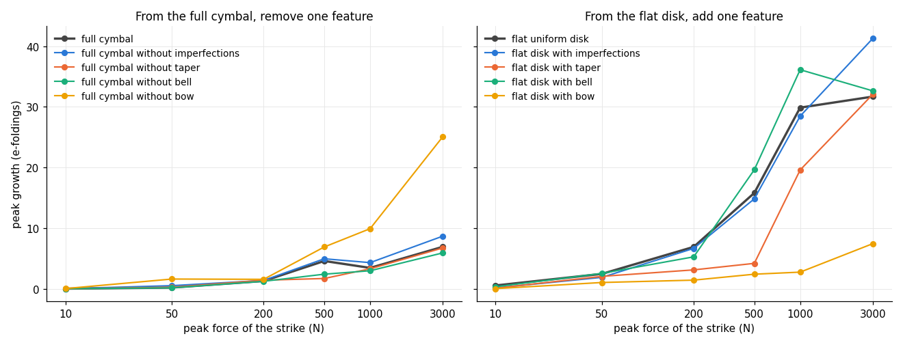
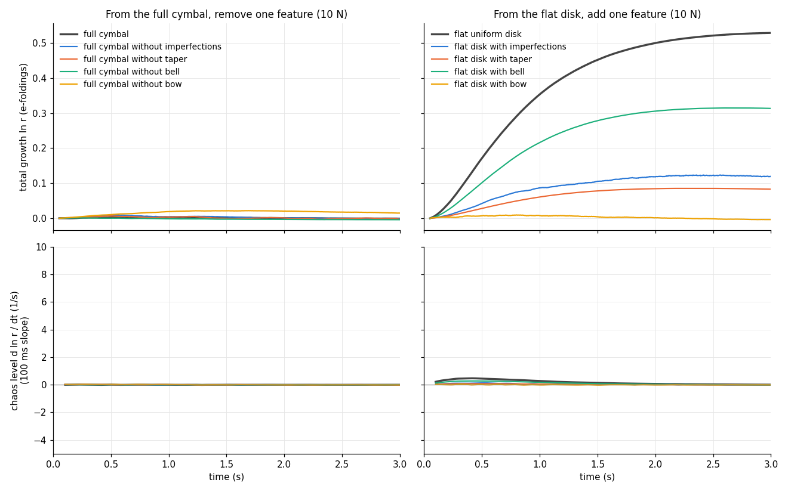
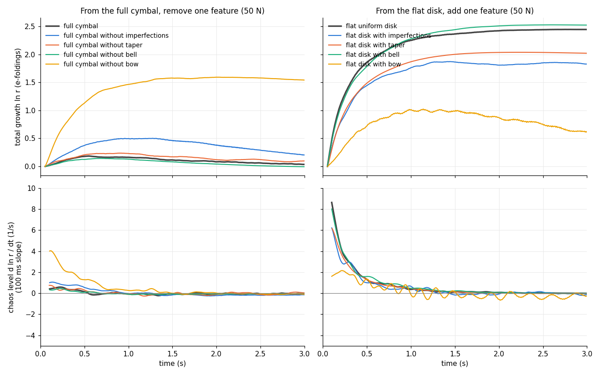
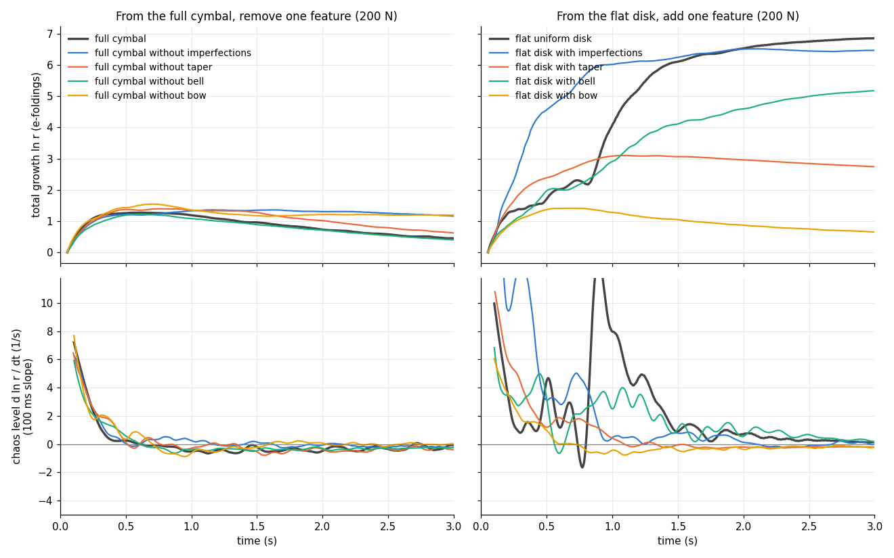
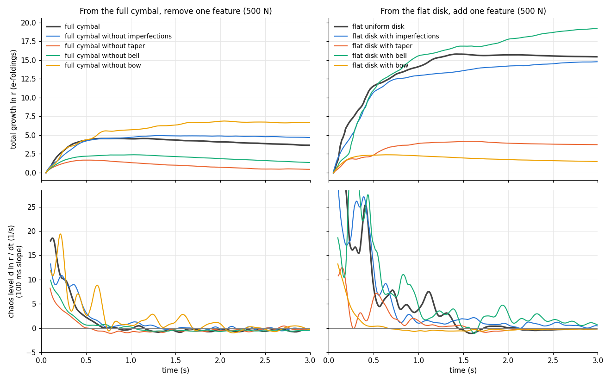
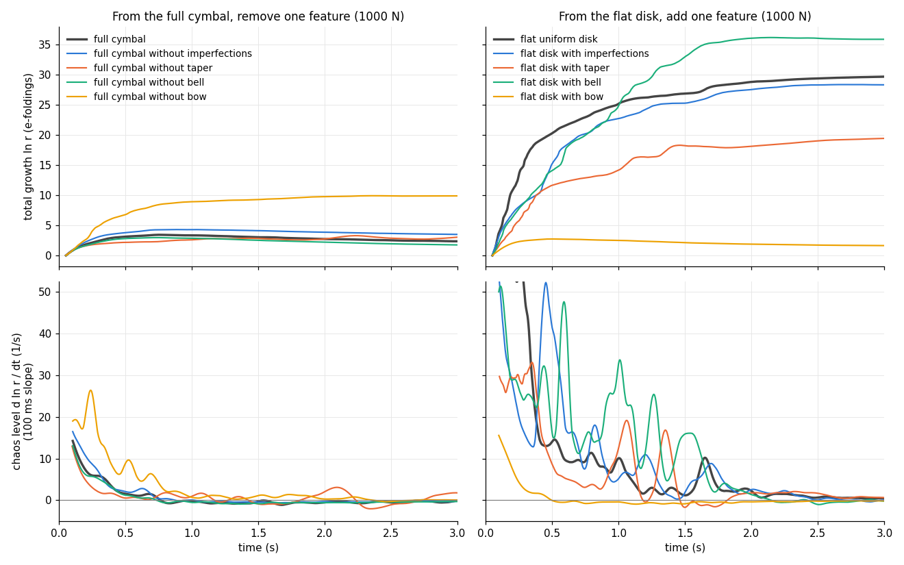
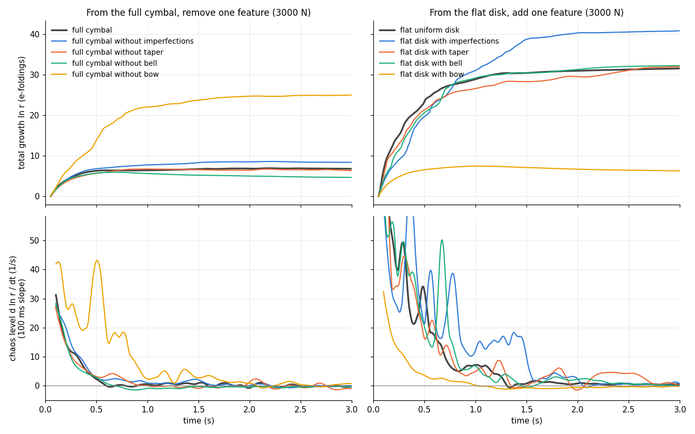
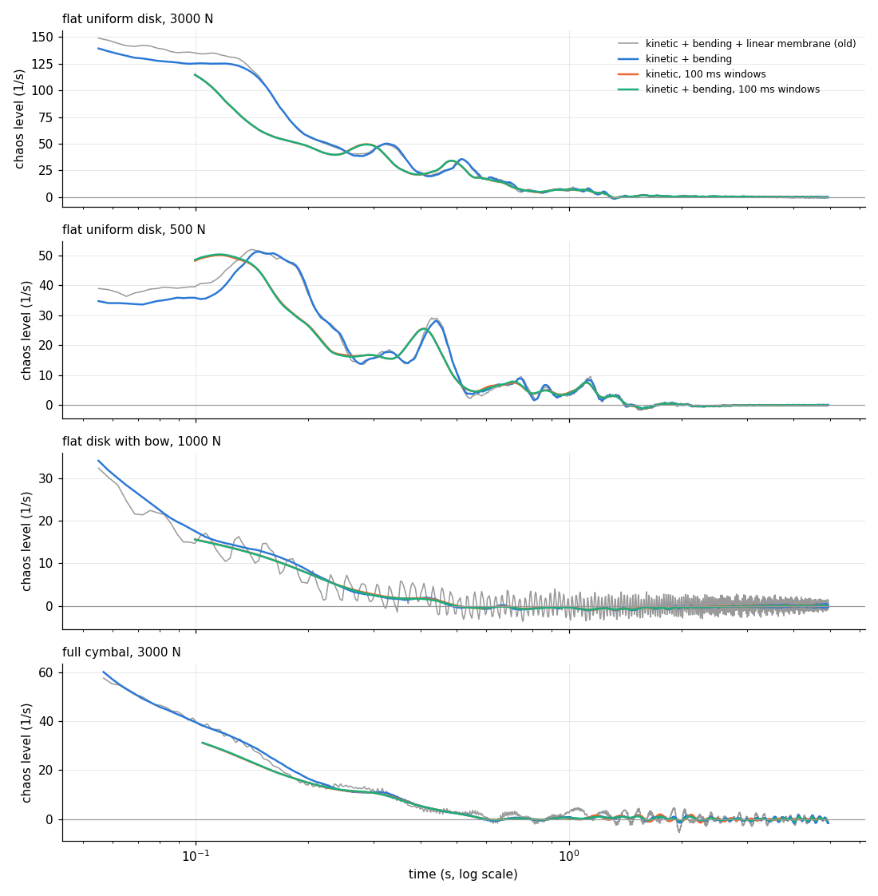
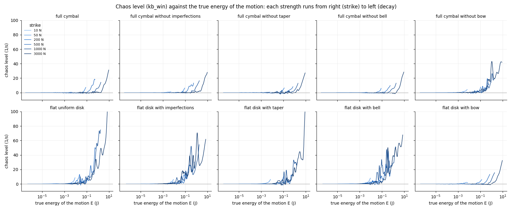
The flat uniform disk and the full cymbal, with bows of 0 to 30 thicknesses, at thicknesses 0.7, 1.0 and 1.4 mm, struck at 200, 1000 and 3000 N scaled by (h / 1 mm)³ (3 s each, the sound of the tangent runs' own strikes). The cymbal's 13 mm bell is kept at every thickness; the cymbal at 1.4 mm with a 42 mm bow is left out (steeper than the shallow-shell bound).
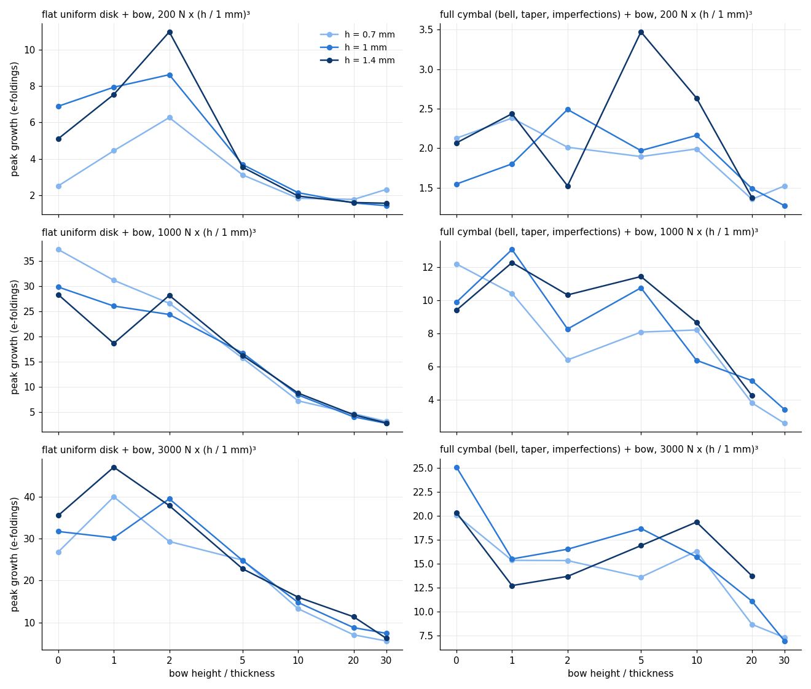
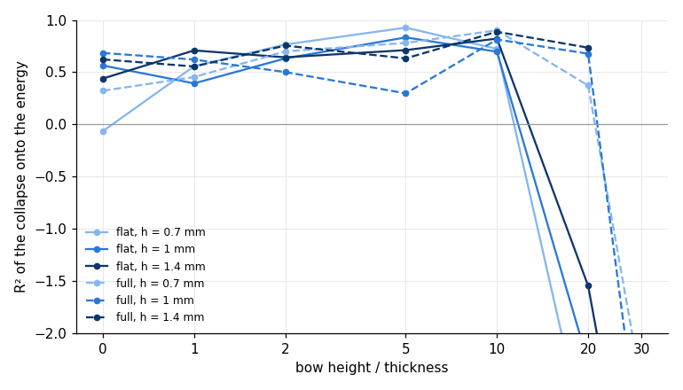
h = 0.7 mm
| bow | 69 N | 340 N | 1000 N |
|---|---|---|---|
| bow 0 h (0 mm) | |||
| bow 1 h (0.7 mm) | |||
| bow 2 h (1.4 mm) | |||
| bow 5 h (3.5 mm) | |||
| bow 10 h (7 mm) | |||
| bow 20 h (14 mm) | |||
| bow 30 h (21 mm) |
h = 1 mm
| bow | 200 N | 1000 N | 3000 N |
|---|---|---|---|
| bow 0 h (0 mm) | |||
| bow 1 h (1 mm) | |||
| bow 2 h (2 mm) | |||
| bow 5 h (5 mm) | |||
| bow 10 h (10 mm) | |||
| bow 20 h (20 mm) | |||
| bow 30 h (30 mm) |
h = 1.4 mm
| bow | 550 N | 2700 N | 8200 N |
|---|---|---|---|
| bow 0 h (0 mm) | |||
| bow 1 h (1.4 mm) | |||
| bow 2 h (2.8 mm) | |||
| bow 5 h (7 mm) | |||
| bow 10 h (14 mm) | |||
| bow 20 h (28 mm) | |||
| bow 30 h (42 mm) |
h = 0.7 mm
| bow | 69 N | 340 N | 1000 N |
|---|---|---|---|
| bow 0 h (0 mm) | |||
| bow 1 h (0.7 mm) | |||
| bow 2 h (1.4 mm) | |||
| bow 5 h (3.5 mm) | |||
| bow 10 h (7 mm) | |||
| bow 20 h (14 mm) | |||
| bow 30 h (21 mm) |
h = 1 mm
| bow | 200 N | 1000 N | 3000 N |
|---|---|---|---|
| bow 0 h (0 mm) | |||
| bow 1 h (1 mm) | |||
| bow 2 h (2 mm) | |||
| bow 5 h (5 mm) | |||
| bow 10 h (10 mm) | |||
| bow 20 h (20 mm) | |||
| bow 30 h (30 mm) |
h = 1.4 mm
| bow | 550 N | 2700 N | 8200 N |
|---|---|---|---|
| bow 0 h (0 mm) | |||
| bow 1 h (1.4 mm) | |||
| bow 2 h (2.8 mm) | |||
| bow 5 h (7 mm) | |||
| bow 10 h (14 mm) | |||
| bow 20 h (28 mm) | |||
| bow 30 h (42 mm) | left out (steeper than the shallow-shell bound) | left out (steeper than the shallow-shell bound) | left out (steeper than the shallow-shell bound) |
Cymbals of 10 to 24 inches: the flat uniform 1 mm disk with bows of 0, 5, 10 and 30 mm, and the full cymbal (planform and bell scaled with the size) with and without its 30 mm bow, struck at 200, 1000 and 3000 N (3 s each). The 10-inch disk and cymbal with a 30 mm bow are left out (steeper than the shallow-shell bound).
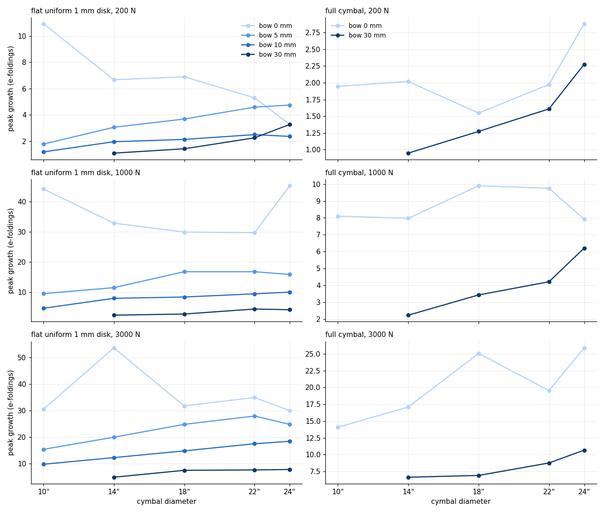
| size, bow | 200 N | 1000 N | 3000 N |
|---|---|---|---|
| 10", bow 0 mm | |||
| 14", bow 0 mm | |||
| 18", bow 0 mm | |||
| 22", bow 0 mm | |||
| 24", bow 0 mm | |||
| 10", bow 5 mm | |||
| 14", bow 5 mm | |||
| 18", bow 5 mm | |||
| 22", bow 5 mm | |||
| 24", bow 5 mm | |||
| 10", bow 10 mm | |||
| 14", bow 10 mm | |||
| 18", bow 10 mm | |||
| 22", bow 10 mm | |||
| 24", bow 10 mm | |||
| 10", bow 30 mm | left out (steeper than the shallow-shell bound) | left out (steeper than the shallow-shell bound) | left out (steeper than the shallow-shell bound) |
| 14", bow 30 mm | |||
| 18", bow 30 mm | |||
| 22", bow 30 mm | |||
| 24", bow 30 mm |
| size, bow | 200 N | 1000 N | 3000 N |
|---|---|---|---|
| 10", bow 0 mm | |||
| 14", bow 0 mm | |||
| 18", bow 0 mm | |||
| 22", bow 0 mm | |||
| 24", bow 0 mm | |||
| 10", bow 30 mm | left out (steeper than the shallow-shell bound) | left out (steeper than the shallow-shell bound) | left out (steeper than the shallow-shell bound) |
| 14", bow 30 mm | |||
| 18", bow 30 mm | |||
| 22", bow 30 mm | |||
| 24", bow 30 mm |